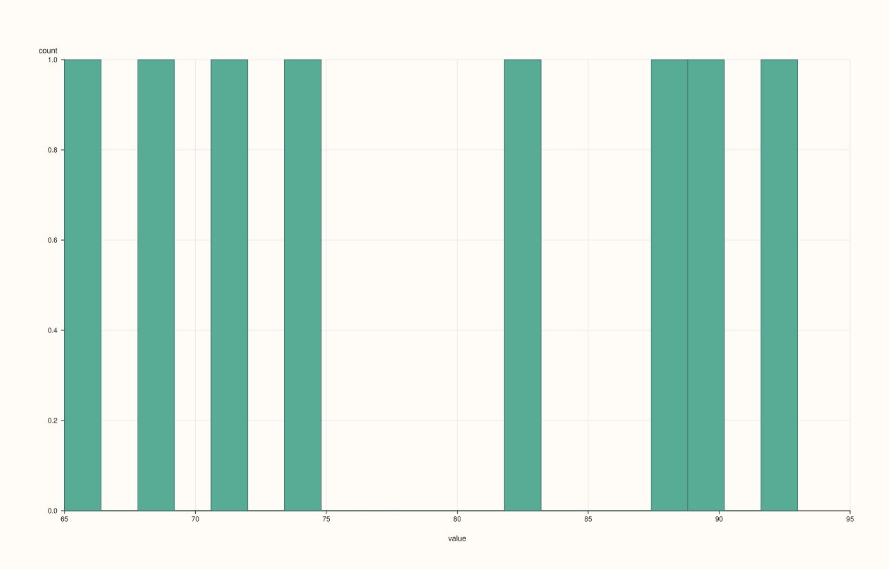
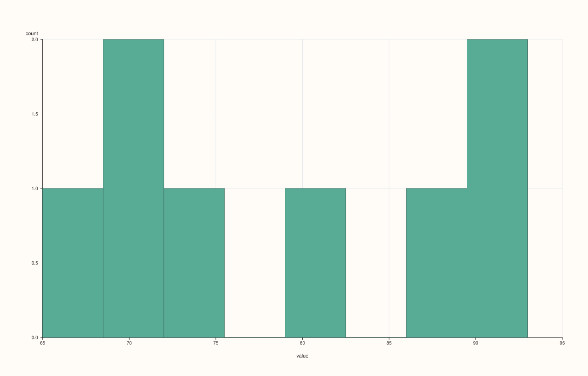

StreamPlotAccessor::hist¶
Back to StreamPlotAccessor API Reference
Signatures¶
StreamPlotAccessor::hist(std::int64_t bins = 20) const -> pluss::pl::Studio
StreamPlotAccessor::hist(const HistPlotOptions& options) const -> pluss::pl::Studio
What It Does¶
Bins the bound stream’s values into a single frequency-count histogram — always exactly
one pane, since a Stream is always one series. Both overloads forward to
ThreadPlotAccessor::hist after Stream::to_thread().
Note
The same bins == 20 ambiguity as the 2D/Thread accessors
bins still passes through resolve_bins(), so the same “is 20 the caller’s explicit
choice, or just the untouched default” ambiguity documented on
DataFramePlotAccessor::hist applies here too, whenever
DataFramePlotOptions::default_bins has been customized via Stream::plot(options).
Parameters¶
bins (std::int64_t, default 20)
Requested bin count, subject to the ambiguity above. Values <= 0 fall back to
options_.default_bins.
options (HistPlotOptions)
The identical struct documented on
CatalogPlotAccessor::hist (bins, alpha, line_width).
Returns¶
pluss::pl::Studio
A single-pane figure containing one histogram of the bound stream’s values.
Examples¶
Example 1. Default bin count.
using namespace pluss::kindle;
auto midterm = Stream(pluss::make_series({71.0, 82.0, 93.0, 65.0, 88.0, 74.0, 90.0, 69.0}));
auto chart = midterm.plot().hist();
chart.show();

Example 2. An explicit, smaller bin count.
using namespace pluss::kindle;
auto midterm = Stream(pluss::make_series({71.0, 82.0, 93.0, 65.0, 88.0, 74.0, 90.0, 69.0}));
auto chart = midterm.plot().hist(5);
chart.show();

Example 3. An explicit HistPlotOptions, tuning bin count and opacity.
using namespace pluss::kindle;
auto midterm = Stream(pluss::make_series({71.0, 82.0, 93.0, 65.0, 88.0, 74.0, 90.0, 69.0}));
pluss::table::HistPlotOptions options;
options.bins = 8;
options.alpha = 0.7;
auto chart = midterm.plot().hist(options);
chart.show();

Notes¶
The x-axis is always titled
"value", the generic fallback name —Streamhas noname()to contribute a custom label.Same
bins == 20ambiguity as the 2D accessor — see the note above.Returns a
pluss::pl::Studio— seeline()’s important callouts for how to view or save the result.
See Also¶
ThreadPlotAccessor::hist: the method this delegates to.StreamPlotAccessor::density: the same per-stream distribution idea, as a smoothed density curve instead of binned counts.